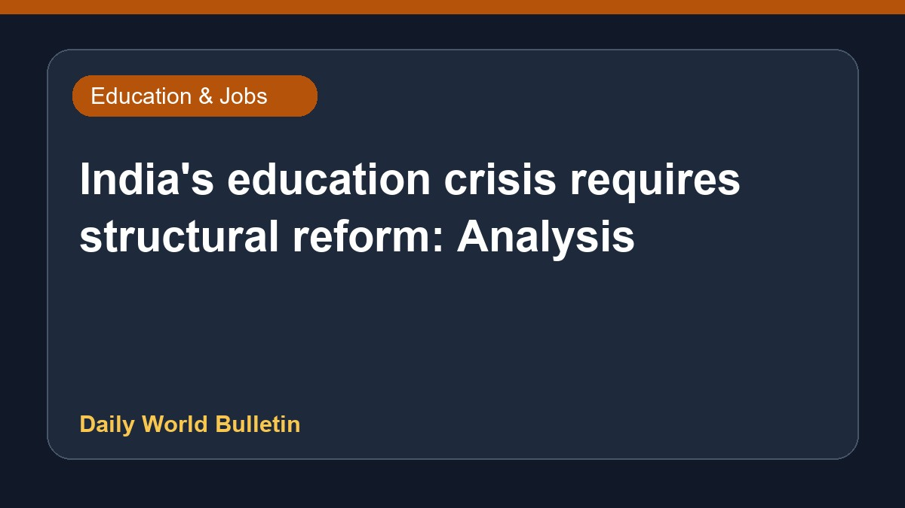

India's education crisis requires structural reform: Analysis

An analysis of India's education sector indicates that the ongoing challenges spanning from Anganwadis to the job market demand deep structural reforms rather than merely appointing a new minister. According to recent commentary from The Economic Times, systemic improvements are essential to address the fundamental issues plaguing the country's educational framework at all levels. Without comprehensive structural changes, superficial leadership shifts will not resolve the persistent difficulties faced by students and job seekers across the nation. Further details regarding specific policy recommendations remain limited in the current reports.
Original source: Education News Sources
From Anganwadis to job market, India's education crisis needs structural reform, not a new minister - The Economic Times ↗
From Anganwadis to job market, India's education crisis needs structural reform, not a new minister - The Economic Times ↗